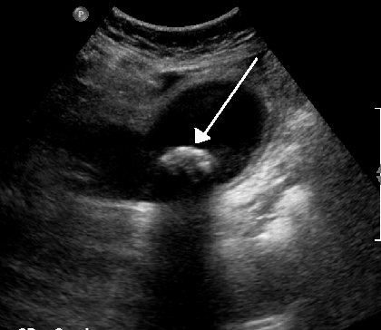
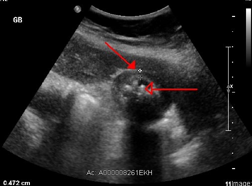
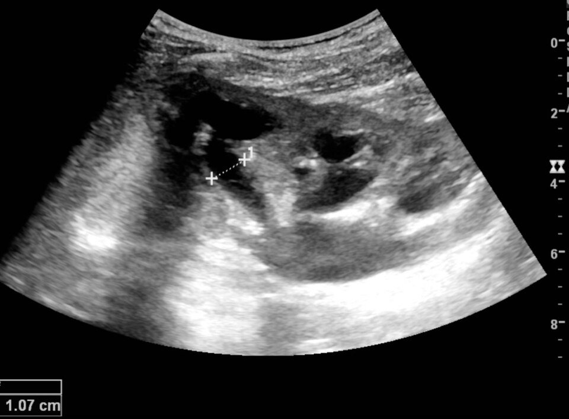
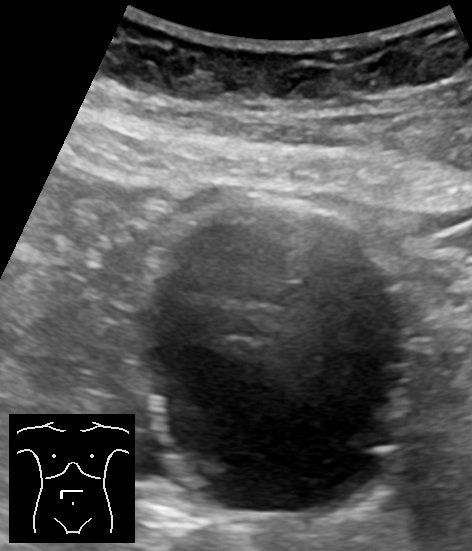
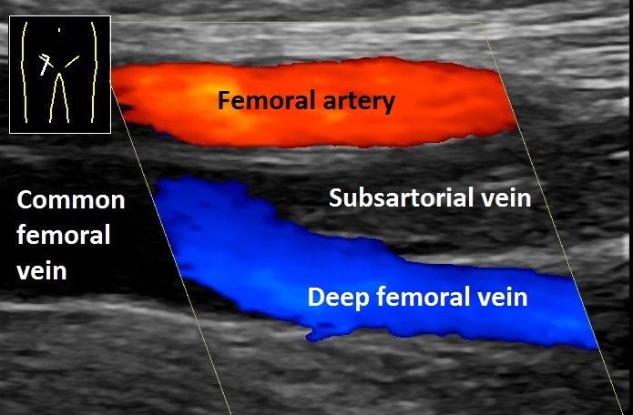
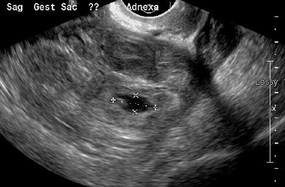
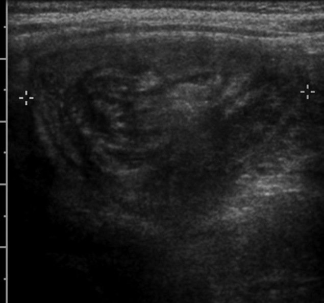
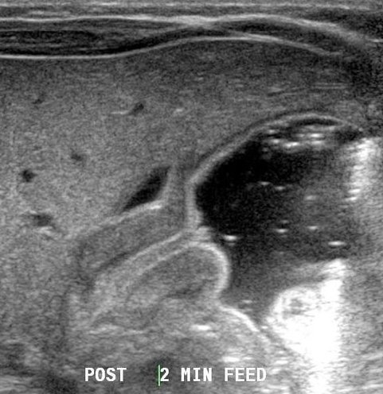
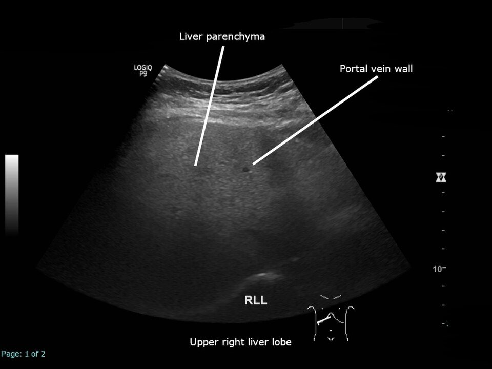
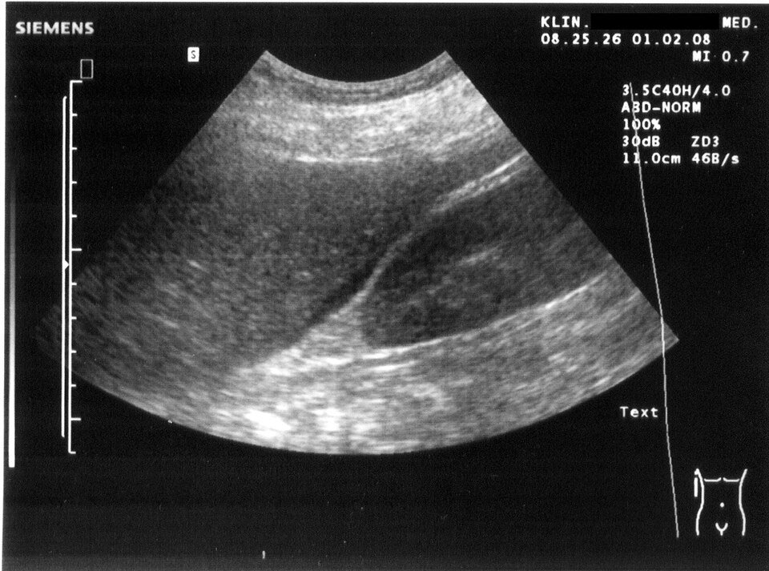

Ultrasound Quiz: Practise Reading Real Scans
Ten real ultrasound images to read: the gallbladder, kidneys, aorta, leg veins, early pregnancy, children’s tummies and trauma. Read the short story, look at the scan, pick a diagnosis, and the answer explains what you should have spotted.
Question 1 of 10 · Abdomen
A 44-year-old has pain under the right ribs that comes on an hour after fatty meals and lasts a few hours.
What does this ultrasound of the gallbladder show (arrow)?

Image: James Heilman, MD · CC BY-SA 3.0 · Wikimedia Commons. - Normal gallbladder
- Gallbladder polyp
- Gas in the bowel
- Gallstone in the neck of the gallbladder
Show answer
Answer: Gallstone in the neck of the gallbladder. A bright (echogenic) curved object (arrowed) sits in the neck of the gallbladder and casts a dark acoustic shadow behind it. A stone stuck in the neck can block the gallbladder and lead to cholecystitis. Tip: Stones are bright, cast a shadow and usually move when the patient rolls over. Polyps don’t shadow and don’t move. Image source: Gallstones by James Heilman, MD.
Question 2 of 10 · Abdomen
A 52-year-old has a day of constant right upper abdominal pain, fever, and pain when the probe presses over the gallbladder.
What does this ultrasound show (arrows)?

Image: James Heilman, MD · CC BY-SA 3.0 · Wikimedia Commons. - Acute cholecystitis
- Gallbladder cancer
- Biliary colic with a normal gallbladder
- Liver abscess
Show answer
Answer: Acute cholecystitis. The gallbladder wall is thickened (one arrow) and there are stones inside it (the other arrow). Wall thickening over 3 mm, stones and tenderness under the probe (a sonographic Murphy’s sign) point to acute cholecystitis. Tip: Biliary colic comes and goes within hours. Constant pain, fever and a tender gallbladder suggest cholecystitis: admit for antibiotics and early surgery. Image source: Pacutecholecystitits by James Heilman, MD.
Question 3 of 10 · Abdomen
A 79-year-old man has trouble passing urine and a rising creatinine on his blood tests.
What does this kidney ultrasound show?

Image: Kristoffer Lindskov Hansen, Michael Bachmann Nielsen and Caroline Ewertsen · CC BY 4.0 · Wikimedia Commons. - Simple kidney cysts
- Hydronephrosis (a swollen, obstructed kidney)
- Normal kidney
- Kidney stone without obstruction
Show answer
Answer: Hydronephrosis (a swollen, obstructed kidney). The middle of the kidney is full of dark, fluid-filled spaces that join up: the renal pelvis and calyces are swollen with urine. The kidney tissue around them (the cortex) is thin. Tip: Joined-up dark spaces in the middle of the kidney = hydronephrosis. Separate round dark spaces = cysts. In an older man, check the bladder too: a blocked prostate can back up both kidneys. Image source: Ultrasonography of hydronephrosis with dilated anechoic pelvis and calyces, along with cortical atrophy by Kristoffer Lindskov Hansen, Michael Bachmann Nielsen and Caroline Ewertsen.
Question 4 of 10 · Vascular
A 78-year-old former smoker has a pulsatile mass in the middle of her abdomen found at a routine check.
What does this abdominal ultrasound show?

Image: Mikael Häggström, M.D. · CC0 · Wikimedia Commons. - Horseshoe kidney
- Normal abdominal aorta
- Abdominal aortic aneurysm
- Simple liver cyst
Show answer
Answer: Abdominal aortic aneurysm. A round, dark vessel lies in front of the spine in the middle of the abdomen, much wider than a normal aorta. An aorta over 3 cm wide is an aneurysm. Tip: Screen men over 65 who have ever smoked. Refer urgently at 5.5 cm or more (or growing fast). A known aneurysm with back or abdominal pain and low blood pressure is a rupture until proven otherwise. Image source: Ultrasonography of abdominal aortic aneurysm in axial plane by Mikael Häggström, M.D..
Question 5 of 10 · Vascular
A 65-year-old has a swollen, aching right leg after a long-haul flight.
What does this Doppler ultrasound of the thigh show?

Image: Mikael Häggström, M.D. · CC0 · Wikimedia Commons. - Baker’s cyst
- Deep vein thrombosis in the femoral (subsartorial) vein
- Normal leg veins
- Superficial thrombophlebitis
Show answer
Answer: Deep vein thrombosis in the femoral (subsartorial) vein. Colour shows blood flowing in the femoral artery and the deep femoral vein, but the labelled subsartorial (femoral) vein has no colour at all: it is blocked with clot. Tip: A vein full of clot has no colour flow and won’t squash flat when you press with the probe. Normal veins compress completely. Image source: Ultrasonography of deep vein thrombosis of the femoral vein -annotated by Mikael Häggström, M.D..
Question 6 of 10 · Pelvis
A 29-year-old with a positive pregnancy test has left lower abdominal pain and spotting. Her period is 6 weeks late.
What does this pelvic ultrasound show?

Image: James Heilman, MD · CC BY-SA 3.0 · Wikimedia Commons. - Ectopic pregnancy
- Ovarian cyst
- Early pregnancy in the uterus
- Miscarriage in progress
Show answer
Answer: Ectopic pregnancy. A small gestational sac sits next to the left ovary, outside the uterus. Any pregnancy outside the uterine cavity is ectopic, most often in the fallopian tube. Tip: Positive pregnancy test, pain and no pregnancy seen in the uterus = ectopic until proven otherwise. Shoulder-tip pain or fainting suggests rupture: an emergency. Image source: Ectopicleftmass by James Heilman, MD.
Question 7 of 10 · Paediatric
A 3-year-old has bouts of screaming and pulling up his legs every 15 minutes, with vomiting and a red-jelly stool.
What does this abdominal ultrasound show?

Image: Frank Gaillard · CC BY-SA 3.0 · Wikimedia Commons. - Pyloric stenosis
- Normal bowel
- Appendicitis
- Intussusception
Show answer
Answer: Intussusception. A round ‘target’ (or ‘doughnut’) of rings: bowel telescoped inside bowel, usually where the small bowel meets the colon. Tip: The typical age is 6 months to 3 years. Ultrasound is the first test, and an air or contrast enema often fixes it without surgery. Image source: Intussusception on ultrasound by Frank Gaillard.
Question 8 of 10 · Paediatric
A 6-week-old boy has projectile vomiting after every feed and is hungry straight afterwards.
What does this ultrasound show?

Image: Dr Laughlin Dawes · CC BY-SA 4.0 · Wikimedia Commons. - Normal pylorus
- Intussusception
- Pyloric stenosis
- Malrotation with volvulus
Show answer
Answer: Pyloric stenosis. The muscle wall of the pylorus (the outlet of the stomach) is thick and long, and food can’t get past even after a feed. Tip: Usual measurements: pyloric muscle 3 mm or thicker, channel 15 to 17 mm or longer. Check for a low chloride, low potassium metabolic alkalosis and correct it before surgery. Image source: PyloricStenosisUS by Dr Laughlin Dawes.
Question 9 of 10 · Abdomen
A 50-year-old with type 2 diabetes and a large waist has mildly raised ALT on routine blood tests.
What does this liver ultrasound show?

Image: Cerevisae · CC BY-SA 4.0 · Wikimedia Commons. - Liver cirrhosis
- Normal liver
- Fatty liver (steatosis)
- Liver metastases
Show answer
Answer: Fatty liver (steatosis). The liver is bright (more echogenic than normal), and the walls of the portal veins fade into the background. The deeper parts of the liver are hard to see. Tip: Fatty liver is very common with obesity and diabetes. Work out the fibrosis risk (for example a FIB-4 score) to decide who needs a FibroScan or specialist referral. Image source: Ultrasound of upper right liver lobe showing fatty liver by Cerevisae.
Question 10 of 10 · Abdomen
A 31-year-old cyclist hit a car door at speed. His pulse is 120 and his blood pressure is falling. A bedside FAST scan is done.
What does this view between the liver and right kidney show?

Image: Drahreg01 · CC BY-SA 3.0 · Wikimedia Commons. - Kidney cyst
- Free fluid in Morison’s pouch (blood, in this setting)
- Gallstones
- Normal Morison’s pouch
Show answer
Answer: Free fluid in Morison’s pouch (blood, in this setting). A dark (anechoic) stripe of fluid separates the liver from the right kidney. In trauma, free fluid on a FAST scan means bleeding until proven otherwise. Tip: Morison’s pouch is the lowest space in the upper abdomen when lying flat, so it’s the first place to look. Unstable plus positive FAST = straight to surgery. Image source: Morison003 by Drahreg01.
Want more? Try the CT scan quiz, MRI quiz and X-ray quiz, or play a new X-ray every day in Opacitis, our daily X-ray puzzle: one film, one story, six diagnoses. Past films are in the Opacitis archive, and there are more games in Medical games.
About this quiz
- 10 questions: 5 abdomen, 2 vascular, 1 pelvis, 2 paediatric.
- Bedside focus: the findings that change what happens next, including point-of-care scans.
- Real images: anonymised ultrasound images under free licences, credited under each image. Patient stories are fictional.
- Free, no sign-up: your best score is saved on your device only.
Common questions
How does ultrasound work?
A probe sends high-frequency sound waves into the body and listens for echoes. Solid tissue reflects some sound (grey), fluid lets it straight through (black), and stones, bone and gas reflect almost all of it (bright, often with a shadow behind).
What does black mean on an ultrasound?
Black (anechoic) means fluid: urine in the bladder, bile in the gallbladder, blood in vessels, or free fluid in the abdomen. Bright (echogenic) means a strong reflector, such as a stone, fat or gas.
What is a FAST scan?
A Focused Assessment with Sonography in Trauma: a quick bedside ultrasound looking for free fluid (usually blood) around the liver, spleen, pelvis and heart. It takes a few minutes and can be repeated.
When is ultrasound the best first test?
For gallstones, kidney obstruction, early pregnancy problems, DVT, many children’s problems (such as intussusception and pyloric stenosis) and checking the aorta. It uses no radiation, is cheap and can be done at the bedside.
Who is this ultrasound quiz for?
Medical, nursing, midwifery, paramedic and sonography students, junior doctors and GPs learning point-of-care ultrasound, and anyone curious about what scans show. Every answer comes with the key finding and a practical tip.
Are these real ultrasound images?
Yes. They’re real, anonymised ultrasound images shared under free licences on Wikimedia Commons, credited under each image. The patient stories are fictional and written to match each image.
More medical quizzes
Image credits (contains answers)
- Gallstones by James Heilman, MD · CC BY-SA 3.0 · via Wikimedia Commons.
- Pacutecholecystitits by James Heilman, MD · CC BY-SA 3.0 · via Wikimedia Commons.
- Ultrasonography of hydronephrosis with dilated anechoic pelvis and calyces, along with cortical atrophy by Kristoffer Lindskov Hansen, Michael Bachmann Nielsen and Caroline Ewertsen · CC BY 4.0 · via Wikimedia Commons.
- Ultrasonography of abdominal aortic aneurysm in axial plane by Mikael Häggström, M.D. · CC0 · via Wikimedia Commons.
- Ultrasonography of deep vein thrombosis of the femoral vein -annotated by Mikael Häggström, M.D. · CC0 · via Wikimedia Commons.
- Ectopicleftmass by James Heilman, MD · CC BY-SA 3.0 · via Wikimedia Commons.
- Intussusception on ultrasound by Frank Gaillard · CC BY-SA 3.0 · via Wikimedia Commons.
- PyloricStenosisUS by Dr Laughlin Dawes · CC BY-SA 4.0 · via Wikimedia Commons.
- Ultrasound of upper right liver lobe showing fatty liver by Cerevisae · CC BY-SA 4.0 · via Wikimedia Commons.
- Morison003 by Drahreg01 · CC BY-SA 3.0 · via Wikimedia Commons.